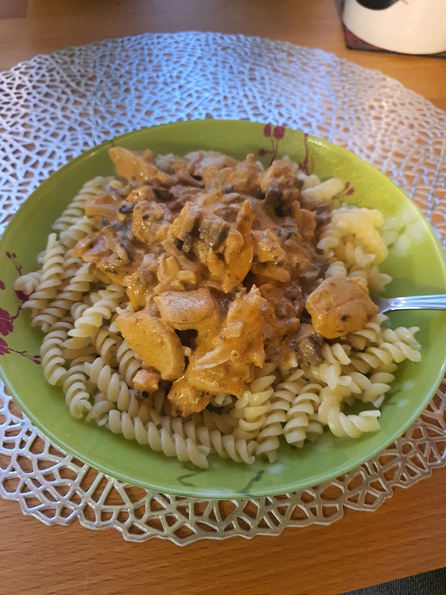
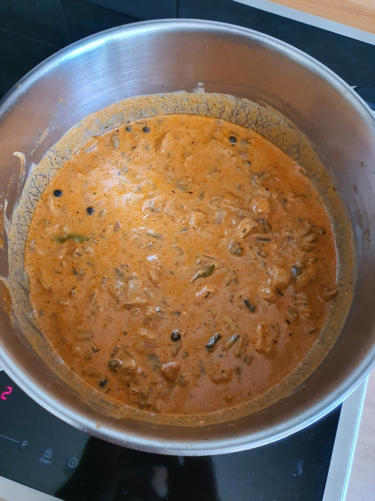

Skład:
- sztuka mięsa wg uznania - około 500g (drób/wieprzowina/wołowina);
- 2 duże cebule;
- puszka pomidorów;
- 2 łyżki przecieru pomidorowego;
- 125ml śmietany 18%;
- sól;
- pieprz;
- 3 liście laurowe;
- 4 ziarna agielskie;
- opcjonalne przyprawy: papryka wędzona, lubczyk, majeranek, zioła prowensalskie, czubryca;
Przygotowanie:
Mięso oczyścić i pokroić w paski. Pokroić cebulę i podsmażyć na oleju. Do podsmażonej cebuli dodać mięso wcześniej przyprawione solą, pieprzem i opcjonalnymi przyprawami. Delikatnie podsmażyć. Dodać pomidorów i przecieru. Zalać zawartość garnka wodą (tak żeby zawartość była pod jej taflą). Dodać liście laurowe i ziele angielskie. Dusić na małym ogniu około godziny. Następnie zagęścić śmietaną. Podawać wg woli z ryżem, makaronem, kaszą bądź pyrami.
Zdjęcia:
 